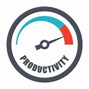
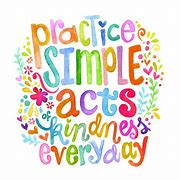

Blue Screen Of Death
Welcome to the BSOD Website, home to an amalgamation of multiple schools and groups that came together during the COVID-19 pandemic to organize a robotics club. Originating from North Cobb High School, the BSOD became a legitimate club through hard work and leadership, all stemming from one spontaneous idea.
Take a look around, if you'd like. We hope you enjoy what you see!
[Cody, BSOD Co-Lead]
The Five Pillars of BSOD
COLLABORATION
Collaboration is a huge part of what we do. Your co-workers are your are greatest tool, and if you use that tool in the right way, there's nowhere you can't go. Work clearly, concisely, precisely, and a well-oiled machine doesn't stand a chance.
LEADERSHIP
Leadership is vital to BSOD. Without a captain to lead, there is no sailing -- and you are the author to your life's story. If leadership is needed, step up and be the leader that those around you may need.

EFFICIENCY
Efficiency is very important to how we function. Speed -- cautious and careful speed -- keeps us moving forward. To begin a journey, don't look backwards, look forwards and take one step after another.
RELIABILITY
Reliability is one of the most important, if not the most important pillar. Simple failures during a competition could be catastrophic, and mistakes happen, but double check, triple check if that's what it takes.

COMPASSION
We are all human. Your fellow co-workers, your judges, your audience, your competition. Treat them as such, and with respect, for one human has the ability to change the entire world.